Vaše první mapa: místnost k procházení
Od prázdné mapy k místnosti, kterou můžete ve hře projít: brushe, textury, caulk, světlo, start hráče, optimalizátor, sestavení s oknem průběhu, procházka v editoru - a .pk3 pro hru.
Každý obrázek na této stránce vznikl, zatímco program dělal přesně tyto kroky, a autotest pokaždé kontroluje výsledek: místnost se sestaví bez úniku, hráč stojí na startu a může chodit a .pk3 obsahuje mapu. Nabídky a zkratky jsou ty z NetRadiant-Custom, takže sedí i jiné tutoriály k mapování - okna vysvětluje stránka Editor map.
Kroky#
- 1
Nastavte hru. Přepněte lištu režimů na Editor map. Editor používá hru, pro kterou je program nastaven; její složky pocházejí z nastavení programu. Edit > Preferences, stránka Hra, ukazuje hru, stránka Cesty cestu k enginu (prázdná: převzato ze složek hry programu).
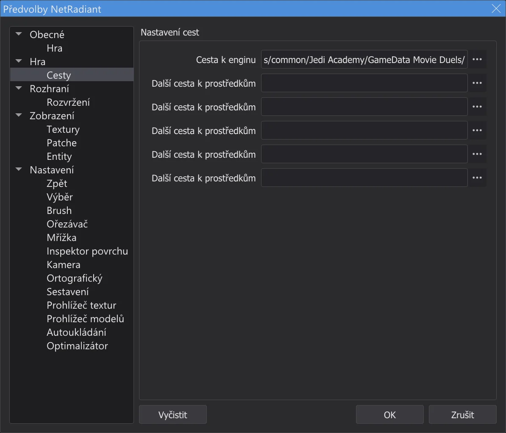
Preferences, stránka Cesty. - 2
Nová mapa. File > New Map začne prázdnou mapu - jen worldspawn. Kolečkem myši 2D pohled trochu oddalte.
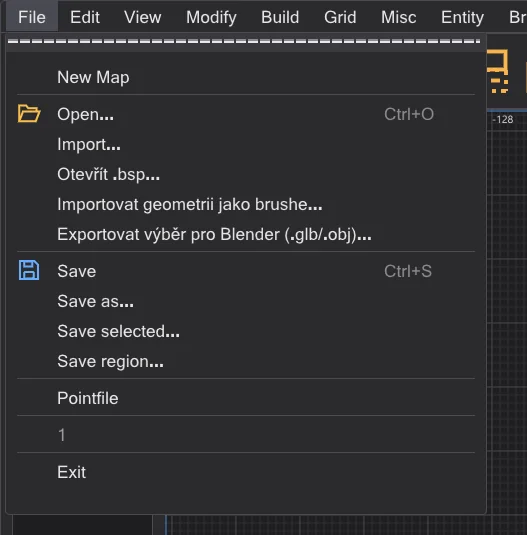
Nabídka File. - 3
Nakreslete brush. Ve 2D pohledu shora táhněte levým tlačítkem myši od jednoho rohu k druhému - zde od -256 -256 do 256 256, krabice široká 512 jednotek. Její výška pochází z pracovní zóny (zpočátku -64 až 64).
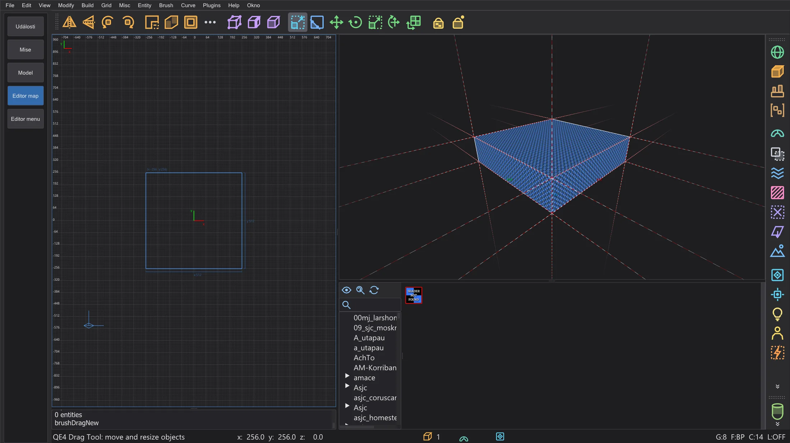
Nový brush, vybraný (červeně). - 4
Zvyšte ho. Num 1 přepne 2D pohled na pohled zepředu (XZ). Uchopte těsně nad horní hranou a táhněte nahoru: horní stěna následuje po mřížce. Zde na 192 - místnost je teď 256 vysoká. Num 7 se vrátí na pohled shora.
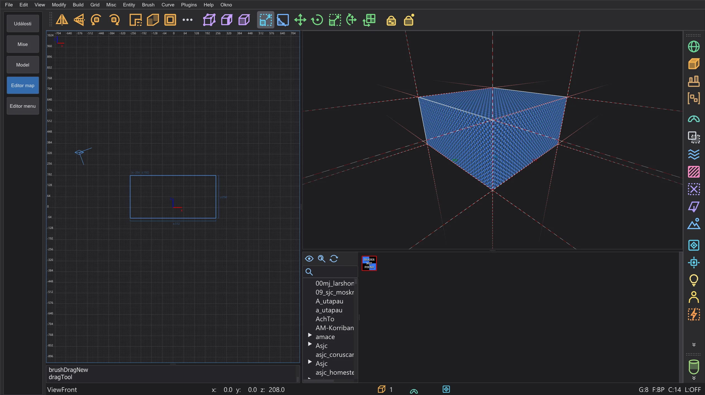
Pohled zepředu: brush je teď 256 vysoký. - 5
Textura. Dvakrát klikněte na složku ve stromu prohlížeče textur a klikněte levým tlačítkem na texturu: dostane ji každá stěna vybraného brushe. Na zdi vyberte něco bez průhlednosti.
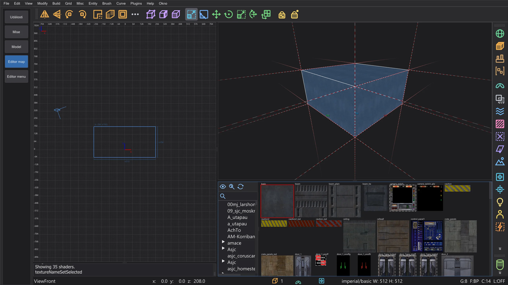
Textura zdi na všech šesti stěnách. - 6
Vydlabejte ho. Tlačítko panelu nástrojů Nástroj CSG otevře nástroj CSG. Tloušťku ponechte na 16 a tlačítko caulk zatím vypněte (to později udělá AutoCaulk), pak stiskněte Vydlabat::přitáhnout stěny: kolem místnosti vyrostou ven šest zdí o tloušťce 16 a vnitřek zůstane přesně krabicí, kterou jste nakreslili. Tlačítko panelu nástrojů Room (Make Room) dělá totéž s velikostí mřížky jako tloušťkou.
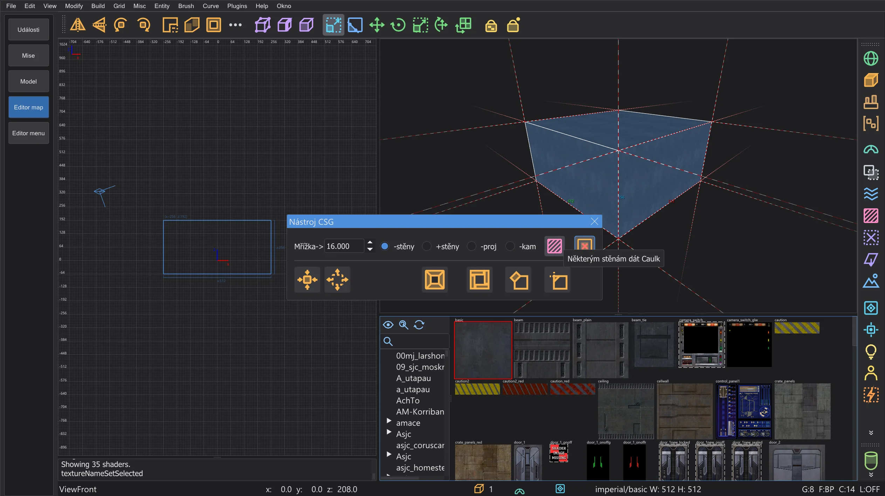
Nástroj CSG s vypnutým tlačítkem caulk. - 7
Textura podlahy. V pohledu zepředu vybere Shift + levé kliknutí na podlahu jen brush podlahy; klikněte v prohlížeči na texturu podlahy. Esc zruší výběr.
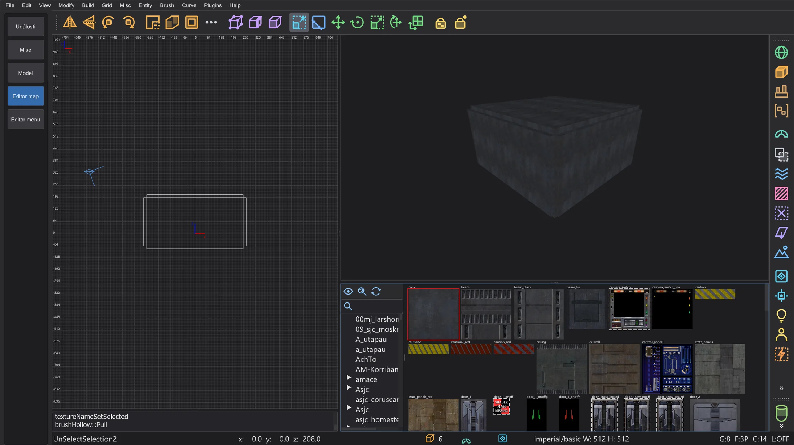
Dutá místnost: šest brushů zdí. - 8
Světlo. Klikněte pravým tlačítkem uvnitř místnosti ve 2D pohledu: otevře se nabídka entit. light se zeptá na intenzitu (300 je dobrý začátek) - OK ho umístí tam, kam jste klikli.
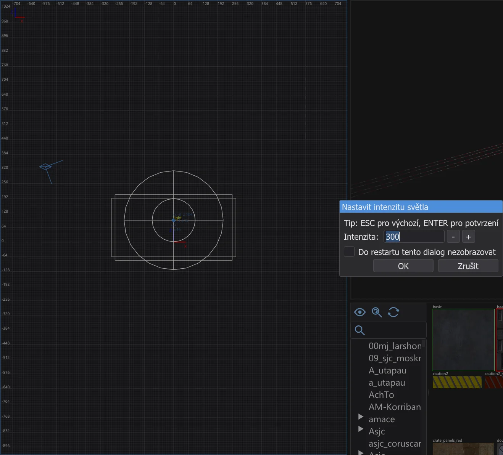
Nastavit intenzitu světla. - 9
Kde hráč začíná. Klikněte pravým tlačítkem blízko podlahy: info > info_player_start. Bez něj hra neví, kam hráče umístit. Jeho krabice stojí na podlaze.
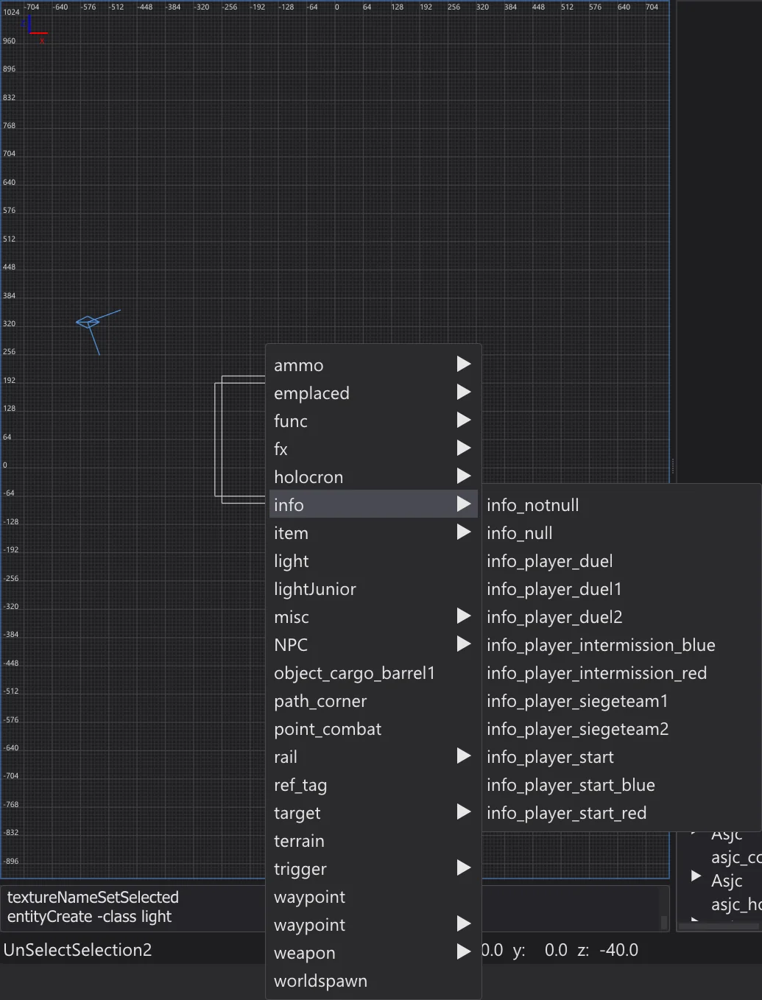
Nabídka entit, podnabídka info. - 10
Uložení. File > Save as - například
meinekarte.mapve vlastní složcemaps, mimo složky hry. Název souboru se stane názvem mapy ve hře.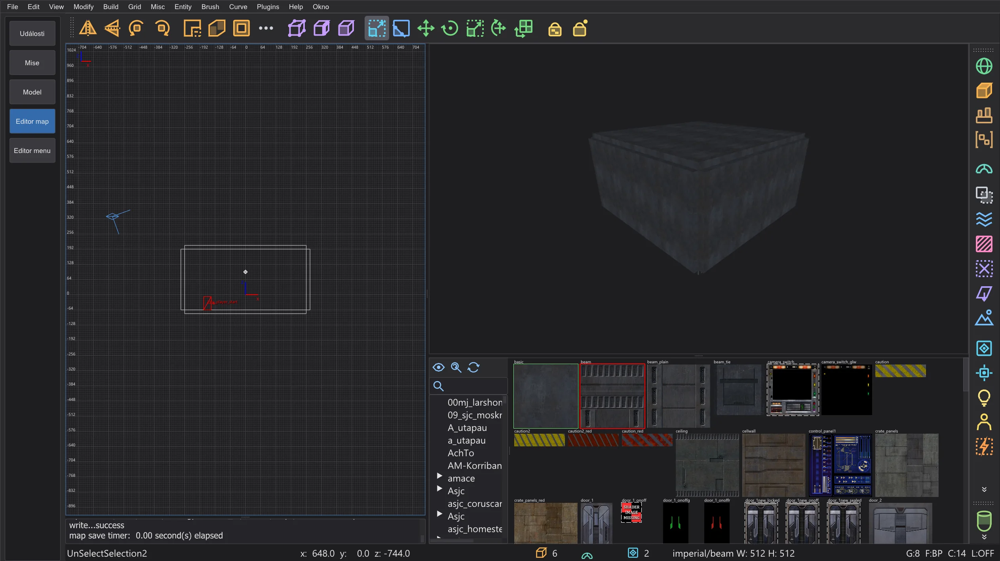
Uložená místnost v editoru. - 11
Caulk zvenku. Stěny, které nikdo nevidí, stále stojí místo v lightmapě a čas kreslení. Vleťte kamerou do místnosti, v pohledu shora natáhněte pomocí Shift + pravého tlačítka obdélník kolem celé místnosti a stiskněte F4 (Brush > AutoCaulk Selected): každá stěna, kterou nelze vidět zevnitř, dostane caulk. Stavět v caulku od začátku funguje také: dejte novým brushům texturu caulk a texturujte jen stěny, které vidíte.
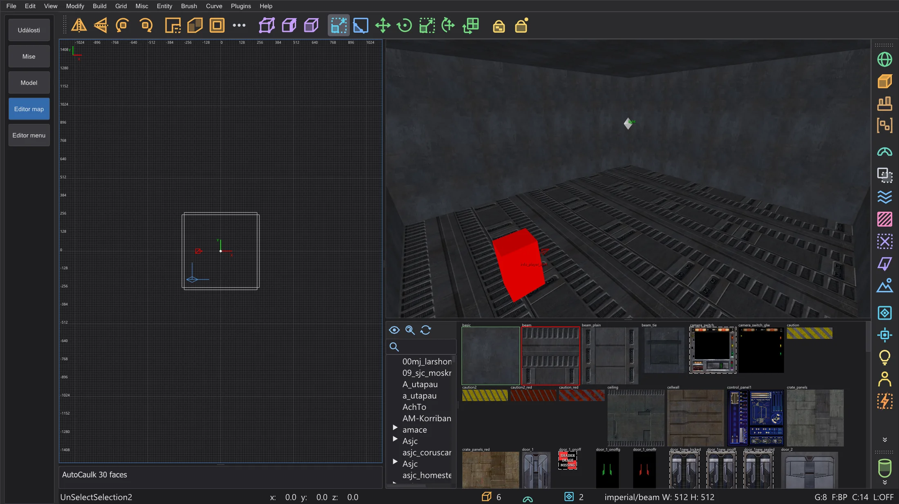
Po AutoCaulk: kamera uvnitř místnosti. - 12
Kontrola. Build > Optimalizátor spočítá limity hry a hledá problémy sestavení, než zkompilujete. Zelená místnost nemá co opravovat.
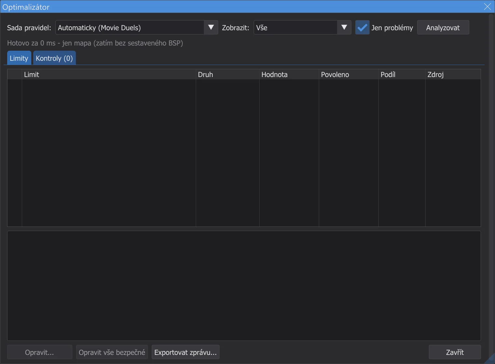
Optimalizátor pro místnost z tutoriálu. - 13
Sestavení. Build > [Final] Fast spustí q3map2 třikrát - BSP, VIS a světlo s odrazy. Okno průběhu ukazuje fázi, průběh a zbývající čas. Pokud mapa propouští, konzole to oznámí červeně a čára ve 2D pohledu ukáže cestu ven - viz Editor map: kompilace mapy.
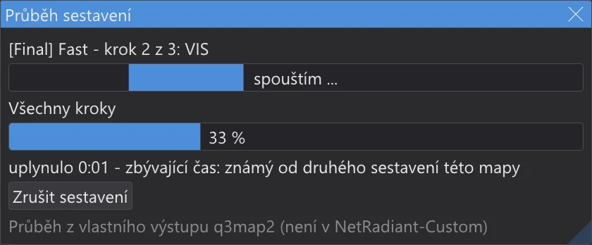
Okno průběhu během sestavení. - 14
Projděte ji. View > Hrát: začít v info_player_start a pak Hrát v editoru (F6): stojíte na info_player_start a chodíte pomocí W A S D, skáčete Space; Esc ukončí. Funguje to i bez kompilace - kolize pocházejí přímo z brushů (viz Hraní v editoru).
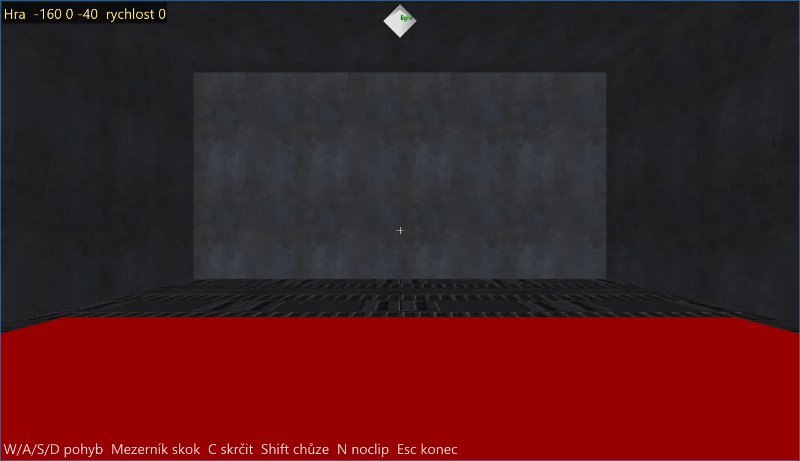
Procházka místností v editoru. - 15
Do hry. Build > Zabalit mapu jako .pk3 zabalí
maps/meinekarte.bspdomeinekarte.pk3vedle .bsp. Program nikdy nezapisuje do složek hry - zkopírujte .pk3 sami doGameData/base(Jedi Academy, Jedi Outcast) nebo do složky svého modu (například Movie Duels). Spusťte hru, otevřete konzoli pomocí Shift+~ a zadejtedevmap meinekarte.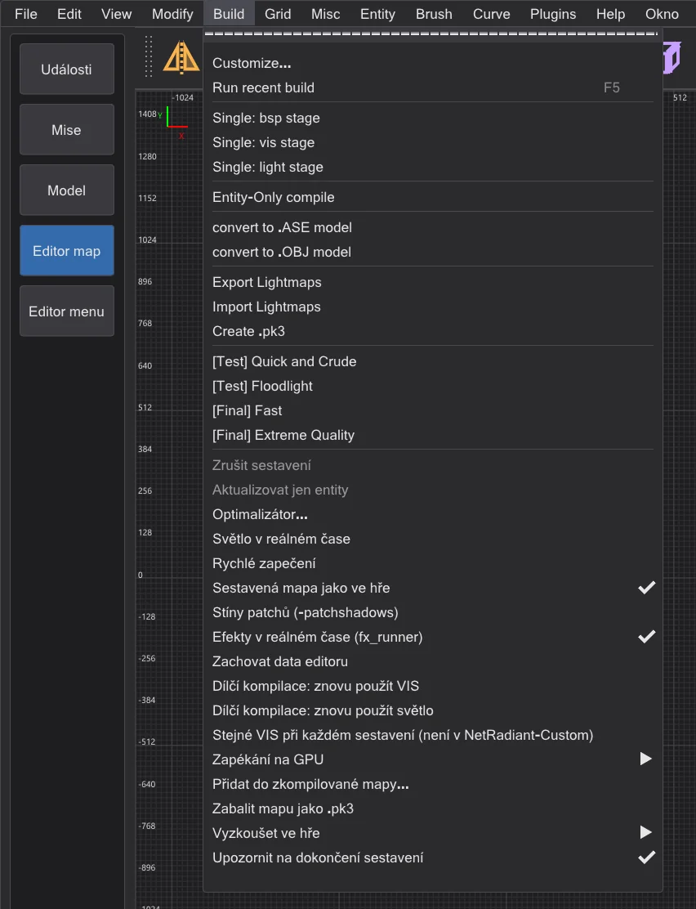
Build s Zabalit mapu jako .pk3 (není v NetRadiant-Custom).


Kam dál#
- Brushe, ořezávač, patche a nástroje CSG: Editor map: stavební nástroje.
- Nabídka Build, úniky, portály a složka sestavení: Editor map: kompilace mapy; rychlejší opětovná sestavení: Editor map: průběh sestavení a dílčí kompilace.
- Limity hry a opravy: Editor map: optimalizátor a limity; náhled světla v kameře: Editor map: rychlost a světlo v reálném čase.
- Terén, logický pohled, zrcadlový režim a hraní v editoru: Editor map: terén, hraní, logika, zrcadlo a další.
- Animační sekvence na vaší mapě: Vlastní mise: vzlet na Taspiru.